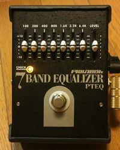

PLAYTECH 7BAND EQUALIZER改造
2013年04月03日 カテゴリー：修理・改造・解析
グラフィックイコライザはスライド抵抗用のケース穴加工が難しく、なかなか自作は面倒かと思います。そこで市販の格安エフェクターPLAYTECH 7BAND EQUALIZERを買って改造してみました。

ケースは折り曲げ式の金属製で結構丈夫なようですが、アースにきちんとつながってなさそうだったので内側の塗装を一部剥ぎました。また、ゴム製の枠を加工して分解するとき枠を取り外さないでいいようにしています。
改造前の中身は下写真です。基板を取り外すには片方のジャックの半田を除去する必要があります。
中身がかなり汚れていてだいぶ年月が経っていそうです。とりあえず電解コンデンサは全部交換しました。
回路図をとってみました。結局作った方が早かったかもしれません…
PLAYTECH 7BAND EQUALIZER SCHEMATIC 画像クリックで拡大
予想通りBOSS GE-7とほとんど同じです。少し周波数がズレていますが、まぁ問題ない程度でしょう。周波数の計算はDGB Studio等のサイトでできますので、好みの周波数に変えるのもよいと思います。
改造した点ですが、R14、R23、R26を82kに変更してBOSS GE-7の値に合わせました。また、ベース用に使うためC1、C23を470nにして気持ち低音が減りにくくしました。一応トゥルーバイパス化も行いました。改造前の状態でほとんど使っていないため良くなったかどうかはわかりません（笑）
他の格安エフェクターもメーカーが回路図を公開してくれるとうれしいですね。モディファイ目的で買う人が増えそうだし、回路が有名メーカーと同じだとわかると安心して買えるというのもありそうだと思います。